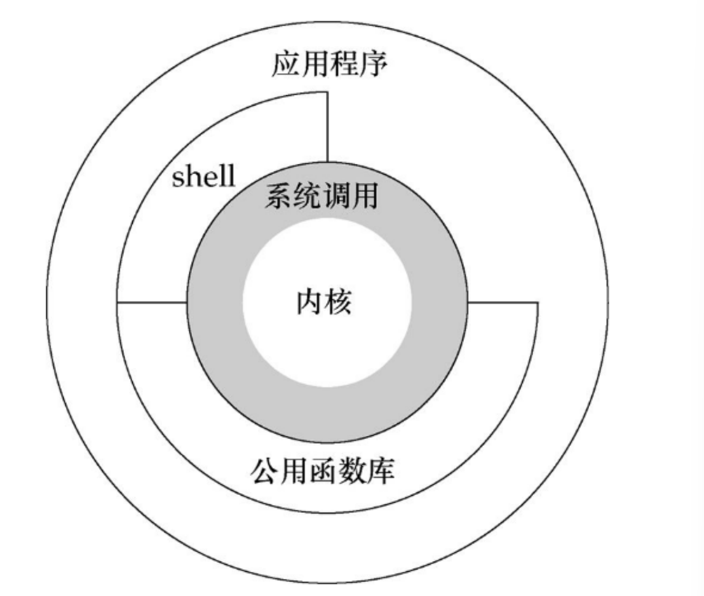

Linux命令行
初识shell
虽然我们已经安装好了系统，但是光会安装不会操作是不够的。我们还要像玩手机一样熟悉并记忆操作方法。
shell是系统的用户界面,提供了用户与内核进行交互操作的一种接口。它接收用户输入的命令并把它送入内核去执行。实际上shell是一个命令解释器，它解释用户输入的命令并且把用户的意图传达给内核。 （可以理解为用户与内核之间的翻译官角色）

我们可以使用shell实现对Linux系统单的大部分管理，例如：
文件管理
用户管理
权限管理
磁盘管理
软件管理
网络管理
使用shell的两种方式
交互式命令行
- 默认等待用户输入命令，输入一行回车后执行一行命令
- 效率低 适合少量的工作
shell脚本
将需要执行的命令和逻辑判断语句都写入一个文件中，一起运行
效率高 适合完成复杂，重复性工作
bash shell提示符
登录Linux系统之后，默认进入交互式的命令行界面，在光标前边会出现提示符
1 | |
用户名
- 当前登录的用户
主机名
- 当前这台主机的名字，默认叫 localhost
目录名
当前光标所在的目录
当前光标所在的目录
权限标识
- 超级管理员权限就表示为 #
- 普通用户标识为 $
这个提示符格式被 $PS1 控制，我们可以查看这个变量
1 | |
shell语法
命令 选项 参数
1 | |
命令
- cal 是命令，用于查看日历
选项
- –year 是选项，表示显示一整年，这个是一个长选项，也就是单词都拼全了，需要两条 - 符号
- -m 是短选项，是首字母，表示每个星期的星期一作为第一天
- 对于有些命令而言，可以不写选项，这样命令会有个默认的行为
- 短选项可以多个合并在一起，比如上面的命令可以写成 -ym 其中y是year简写，可以和m写在 一起，而长选项不支持写在一起
参数
- 2020 是参数，参数是命令作用的对象，表示查看的是2020年的日历
我们也可以查看这个命令的所有选项
1 | |
常用命令
Linux的常见命令比较多，这边只列出初学者最常用的部分命令，大家可以根据命令意思去进行练习。
注意Linux会准确的识别出命令的大小写，所以大家需要注意大小写的问题。命令选项和参数之间是用空格进行分隔，请大家在输入的时候注意不要缺失空格。
学习Linux最重要的就是以下三个方面
1 | |
下面就是开始第一步，积累基础的命令
ls
用于显示指定工作目录下之内容（列出目前工作目录所含之文件及子目录)
1 | |
选项
-a：显示所有文件及目录 (.开头的隐藏文件也会列出)
-l：除文件名称外，亦将文件型态、权限、拥有者、文件大小等资讯详细列出
-r：将文件以相反次序显示(原定依英文字母次序)
-t：将文件依建立时间之先后次序列出
-A：同 -a ，但不列出 “.” (目前目录) 及 “…” (父目录)
-F：在列出的文件名称后加一符号；例如可执行档则加 “*”, 目录则加 “/”
-R：若目录下有文件，则以下之文件亦皆依序列出
-h：将显示出来的文件大小以合适的单位显示出来
实例
查看当前目录下的文件
1 | |
查看根目录下的文件，查看/usr目录下的文件
1 | |
查看当前目录下所有文件，包括隐藏文件
1 | |
查看当前目录下文件详情，包括隐藏文件
1 | |
查看当前目录下的文件，并且显示出目录，文件，程序的区别
1 | |
查看当前目录下的文件，如果有文件夹，那么将文件夹中的文件也显示出来
1 | |
扩展知识
1 | |
第一列共10位，第1位表示文档类型， d 表示目录， - 表示文件， l 表示链接文件， d 表示可随机 存取的设备，如U盘等， c 表示一次性读取设备，如鼠标、键盘等。后9位，依次对应三种身份所拥 有的权限，身份顺序为：owner、group、others，权限顺序为：readable、writable、 excutable。如： -r-xr-x— 的含义为当前文档是一个文件，拥有者可读、可执行，同一个群组下的 用户，可读、可写，其他人没有任何权限。
第二列表示链接数，表示有多少个文件链接到inode号码。
第三列表示拥有者
第四列表示所属群组
第五列表示文档容量大小，单位字节
第六列表示文档最后修改时间，注意不是文档的创建时间哦
第七列表示文档名称。以点(.)开头的是隐藏文档
cd
用于切换当前工作目录
1 | |
实例
跳转到 /usr/bin 目录下
1 | |
跳到自己的 home 目录
1 | |
跳到目前目录的上一层
1 | |
跳转到之前所在的位置
1 | |
pwd
显示工作目录
1 | |
-L 打印 $PWD 变量的值，如果它命名了当前的工作目录
-P 打印当前的物理路径，不带有任何的符号链接
默认情况下， pwd 的行为和带 -L 选项一致
1 | |
clear
用于清除屏幕
使用快捷键 ctrl+l 也可以实现一样的效果
echo
用于字符串的输出
1 | |
选项
-n：不输出行尾的换行符
-e：允许对下面列出的加反斜线转义的字符进行解释
- \ 反斜线
- \a 报警符(BEL)
- \b 退格符
- \c 禁止尾随的换行符
- \f 换页符
- \n 换行符
- \r 回车符
- \t 水平制表符
- \v 纵向制表符
-E 禁止对在STRINGs中的那些序列进行解释
实例
显示出 hello world
1 | |
用两行显示出 hello world
1 | |
输出 hello world 的时候让系统发出警报音
1 | |
系统命令
poweroff
用于关闭计算器并切断电源
1 | |
选项
-n: 在关机前不做将记忆体资料写回硬盘的动作
-w: 并不会真的关机，只是把记录写到 /var/log/wtmp 档案里
-d: 不把记录写到 /var/log/wtmp 文件里
-i: 在关机之前先把所有网络相关的装置先停止
-p: 关闭操作系统之前将系统中所有的硬件设置为备用模式。
reboot
用来重新启动计算机
1 | |
选项
-n: 在关机前不做将记忆体资料写回硬盘的动作
-w: 并不会真的关机，只是把记录写到 /var/log/wtmp 档案里
-d: 不把记录写到 /var/log/wtmp 文件里（-n 这个参数包含了 -d）
-f: 强迫重开机，不呼叫 shutdown 这个指令
-i: 在重开机之前先把所有网络相关的装置先停止
whoami
用于显示自身用户名称
1 | |
快捷键
| 快捷键 | 作用 |
|---|---|
| ^C | 终止前台运行的程序 |
| ^C | 退出 等价exit |
| ^L | 清屏 |
| ^A | 光标移动到命令行的最前端 |
| ^E | 光标移动到命令行的后端 |
| ^U | 删除光标前所有字符 |
| ^K | 删除光标后所有字符 |
| ^K | 搜索历史命令，利用关键词 |
帮助命令
history
1 | |
选项
-c：将目前shell中的所有history命令消除
-a：将目前新增的命令写入histfiles, 默认写入 ~/.bash_history
-r：将histfiles内容读入到目前shell的history记忆中
-w：将目前history记忆的内容写入到histfiles
实例
将history的内容写入一个新的文件中
1 | |
清空所有的history记录，注意并不清空 ~/.bash_history 文件
1 | |
使用 ! 执行历史命令。
! number 执行第几条命令
! command 从最近的命令查到以 command 开头的命令执行
! !执行上一条
1 | |
help
显示命令的帮助信息
1 | |
选项
-d：输出每个主题的简短描述
-m：以伪 man 手册的格式显示使用方法
-s：为每一个匹配 PATTERN 模式的主题仅显示一个用法
实例
查看echo的帮助信息
1 | |
man
显示在线帮助手册页
1 | |
快捷键
| 按键 | 用途 |
|---|---|
| 空格键 | 向下翻一页 |
| PaGe down | 向下翻一页 |
| PaGe up | 向上翻一页 |
| home | 直接前往首页 |
| end | 直接前往尾页 |
| / | 从上至下搜索某个关键词，如“/linux” |
| ? | 从下至上搜索某个关键词，如“?linux” |
| n | 定位到下一个搜索到的关键词 |
| N | 定位到上一个搜索到的关键词 |
| q | 退出帮助文档 |
实例
查看echo的man手册
1 | |
alias
用于设置指令的别名
查看系统当前的别名
1 | |
修改别名，比如使用wl来查看IP地址相关信息
1 | |
为了让别名永久生效，可以讲修改别名的命令写入 bashrc 文件，这个文件中的命令会在每次登陆 命令行的时候执行
1 | |